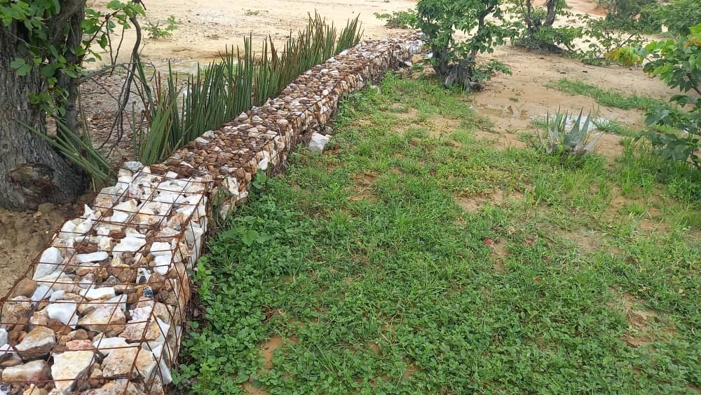

Infiltration trenches
Description
Infiltration trenches are a storm water management technique designed to capture sediment and infiltrate runoff water into the soil. They consist of excavated trenches allowing the water to slowly infiltrate into the land. Infiltration trenches help reduce stormwater runoff and prevent erosion. As water infiltrates into the soil it replenishes groundwater reserves. This increase in available water supports agricultural productivity and will help to ensure a staple food supply.
Dimensions of an infiltration trench, swale or dead-level contour
Approximate Dimensions (in metres):
Site Selection:
Select an area above a gully or where rainfall runoff is causing surface erosion. Ensure the site slope is less than 5% to allow construction of a series of trenches that will prevent the flow of water and allow infiltration to the soil, see Figure 5 below. The optimal slope is 1-5%, with 2-3% being ideal.